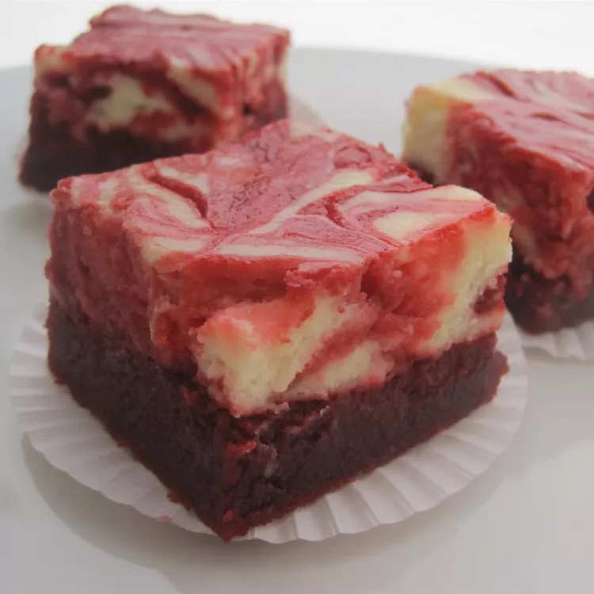

Red Velvet Cheesecake Brownies

Description:
These red velvet cheesecake brownies are moist, delicious, and absolutely beautiful! Perfect for red velvet cake lovers; adds a different twist to the traditional cake. A great dessert for Valentine's Day and can be made ahead.
Ingredients:
- Sugar: These red velvet cheesecake brownies start with a cup of white sugar. You'll need more white sugar for the cream cheese filling.
- Butter: Beat a stick of melted butter with the first cup of sugar.
- Cocoa powder: Unsweetened cocoa powder gives the brownies their chocolatey flavor.
- Food coloring: You can omit the red food coloring if you like, but your brownies won't have the signature red velvet hue.
- Vanilla extract enhances the flavors of both the brownies and the filling.
- Vinegar: White vinegar adds a hint of acidity.
- Salt: A pinch of salt enhances the overall flavor of the red velvet brownies.
- Eggs: You'll need two eggs for the brownies and one egg for the filling.
- Flour: All-purpose flour gives the brownies structure.
- Cream cheese: A cream cheese filling takes these decadent red velvet brownies over the top.
Steps:
- Make the brownie batter according to the recipe.
- Set aside ¼ cup of batter, then pour the rest of the batter into a prepared baking dish.
- Make the cream cheese filling according to the recipe.
- Dollop the filling over the batter. Drizzle the reserved batter over the dollops.
- Drag a knife or skewer through the batter and filling to create swirls.
- Bake the brownies, cool, and cut into pieces.